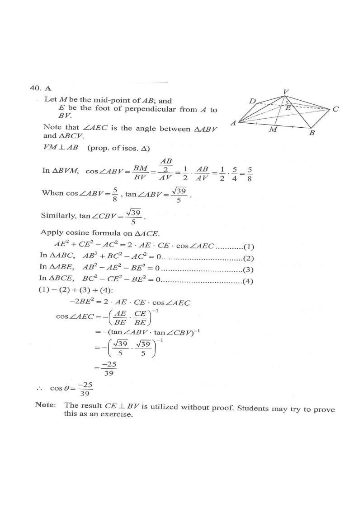

DSE 2023 · 卷二 · Q40
正四角錐的兩面角
三角學 · 立體圖形 · 選擇題
題目
正四角錐 $VABCD$ 的底為正方形 $ABCD$。設 $\theta$ 為 $\triangle ABV$ 與 $\triangle BCV$ 之間的夾角。若 $AB:AV=5:4$，求 $\cos\theta$。
A.
$-\dfrac{25}{39}$
B.
$-\dfrac{17}{33}$
C.
$-\dfrac{9}{16}$
D.
$0$

原題附圖
題解
A
B
C
D
V
AV
AB
兩個面 ABV、BCV 的夾角 θ
cos θ = −25/39
圖：正四角錐 $VABCD$，$AB:AV=5:4$；$\theta$ 為面 $ABV$ 與 $BCV$ 的夾角，$\cos\theta=-\tfrac{25}{39}$（題解繪）
第 1 步
按比例設定邊長
設 $AB=5k$、$AV=4k$。底面正方形 $AC=5\sqrt2\,k$，$AO=\dfrac{5\sqrt2}{2}k$。正四角錐的高 $VO\perp$ 底面：\[ VO=\sqrt{16k^2-\tfrac{50}{4}k^2}=\frac{\sqrt{14}}{2}k \]
第 2 步
求 $\tan\angle ABV$
等腰三角形
\(VA=VB=4k,\ AB=5k\)
正四角錐的側稜等長，$\triangle ABV$ 為等腰三角形。
\[ \cos\angle ABV=\frac{BM}{BV}=\frac{\frac12(5k)}{4k}=\frac58,\qquad \tan\angle ABV=\frac{\sqrt{8^2-5^2}}{5}=\frac{\sqrt{39}}{5} \]由對稱，$\tan\angle CBV=\dfrac{\sqrt{39}}{5}$。
第 3 步
作兩個面的垂線
設 $E$ 為 $A$ 到 $BV$ 的垂足。因 $\triangle ABV$ 與 $\triangle BCV$ 都以 $BV$ 為公共邊，兩面角就是 $\angle AEC$，故 $\cos\theta=\cos\angle AEC$。
第 4 步
用餘弦定理連結
餘弦定理
\(AC^2=AE^2+CE^2-2\,AE\cdot CE\cos\angle AEC\)
在 $\triangle ACE$ 中，$AC$ 是兩垂線端點的距離。
配合 $AB^2=AE^2+BE^2$、$BC^2=CE^2+BE^2$ 及 $AC^2=AB^2+BC^2$，相加消去平方項：\[ -2BE^2=2\,AE\cdot CE\cos\angle AEC \]\[ \cos\theta=-\frac{BE^2}{AE\cdot CE}=-\frac{1}{\tan\angle ABV\cdot\tan\angle CBV} \]
第 5 步
代入數值
\[ \cos\theta=-\left(\frac{\sqrt{39}}{5}\cdot\frac{\sqrt{39}}{5}\right)^{-1}=-\frac{25}{39} \]
答案
A
（$-\dfrac{25}{39}$）
練習
同類新題
題目.
正方體 $ABCDEFGH$ 中，求面 $ABCD$ 與面 $ABFE$ 的夾角。
顯示題解
第 1 步.
兩面沿 $AB$ 相交
第 2 步.
$BC\perp AB$、$BF\perp AB$，故夾角為 $\angle CBF$
答案：$90^\circ$
‹ 上一題
目錄
下一題 ›